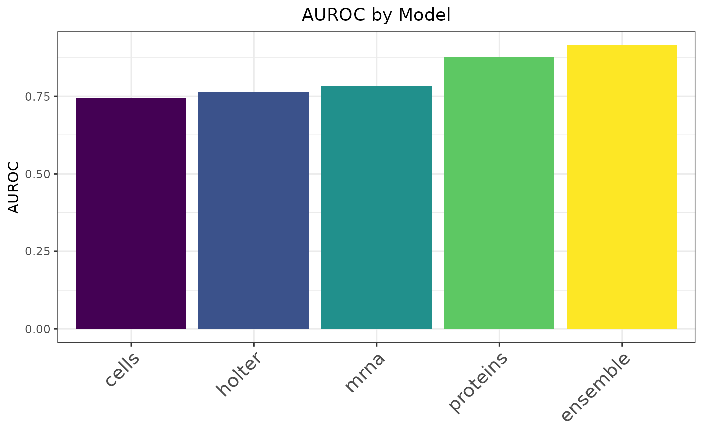
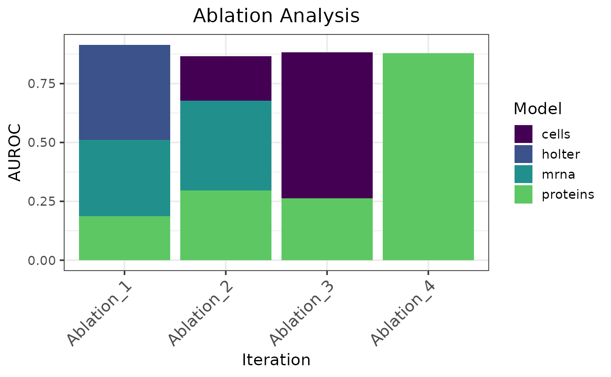

Binary Classification Using Heart Failure Datasets
Source:vignettes/heart_failure.Rmd
heart_failure.RmdThis example shows a binary classification workflow for predicting
hospitalization from multimodal heart failure data using
caretMultimodal. The workflow covers loading the data,
training modality-specific models and a stacked ensemble, and evaluating
performance with ROC curves, contribution plots, and ablation analysis.
The default settings on 5-fold cross validation are used to evaluate
model performance.
Load the data
The dataset used in this example is included in the
caretMultimodal package.
set.seed(123L)
# Load the data
data("heart_failure_datasets", package = "caretMultimodal")
# Inspect the available modalities
vapply(heart_failure_datasets, dim, integer(2))## demo cells holter mrna proteins
## [1,] 58 58 58 58 58
## [2,] 29 14 29 5000 65
# Grab the target column and drop the demo dataset
hospitalizations <- heart_failure_datasets$demo$hospitalizations
heart_failure_datasets$demo <- NULLTrain models with caretMultimodal
# Set up hyperparameter tuning grid
alphas <- c(0.7, 0.775, 0.850, 0.925, 1)
lambdas <- seq(0.001, 0.1, by = 0.01)
tuneGrid <- expand.grid(alpha = alphas, lambda = lambdas)
# Train the base models
heart_models <- caretMultimodal::caret_list(
target = hospitalizations,
data_list = heart_failure_datasets,
method = "glmnet",
tuneGrid = tuneGrid
)
# Train the ensemble model
heart_stack <- caretMultimodal::caret_stack(
caret_list = heart_models,
method = "glmnet",
tuneGrid = tuneGrid
)Evaluate and Interpret
Model performance
summary(heart_stack)## model method alpha lambda ROC Sens Spec ROCSD
## <char> <char> <num> <num> <num> <num> <num> <num>
## 1: cells glmnet 0.850 0.091 0.7740741 0.9777778 0.00000000 0.14721931
## 2: holter glmnet 0.850 0.081 0.7851852 1.0000000 0.16666667 0.08842471
## 3: mrna glmnet 0.925 0.091 0.8111111 0.9777778 0.06666667 0.16789670
## 4: proteins glmnet 0.700 0.001 0.8962963 0.9555556 0.46666667 0.09128709
## 5: ensemble glmnet 0.925 0.071 0.9407407 0.9555556 0.40000000 0.06728112
## SensSD SpecSD
## <num> <num>
## 1: 0.04969040 0.0000000
## 2: 0.00000000 0.2357023
## 3: 0.04969040 0.1490712
## 4: 0.06085806 0.4472136
## 5: 0.09938080 0.2527625Note: Performance metrics returned by
summary.caret_stack() are the resampling summaries
generated by caret and may differ from metrics calculated
directly from out-of-fold predictions. For example, the reported ROC
value is the mean ROC across resampling folds, whereas
plot_roc.caret_stack() calculates AUROC from the pooled
out-of-fold predictions. See compute_metric.caret_stack()
for calculating metrics directly from pooled out-of-fold
predictions.
# plot_roc is only for binary classification
caretMultimodal::plot_roc(heart_stack)
metric_fun <- function(preds, target) {
pROC::roc(response = target, predictor = preds, quiet = TRUE)$auc
}
caretMultimodal::compute_metric(
heart_stack,
metric_fun = metric_fun,
metric_name = "AUROC"
)## Model AUROC
## <char> <num>
## 1: cells 0.7435897
## 2: holter 0.7641026
## 3: mrna 0.7829060
## 4: proteins 0.8786325
## 5: ensemble 0.9145299
caretMultimodal::plot_metric(
heart_stack,
metric_fun = metric_fun,
metric_name = "AUROC"
)
Base model and feature contributions
caretMultimodal::compute_model_contributions(heart_stack)## Model Relative Contribution
## <char> <num>
## 1: holter 44.1023
## 2: mrna 35.3940
## 3: proteins 20.5037
## 4: cells 0.0000
caretMultimodal::plot_model_contributions(heart_stack)
caretMultimodal::compute_feature_contributions(heart_stack)## Model Feature Relative Contribution
## <char> <char> <num>
## 1: holter HS_HR_AVE_DayToNight 41.585315
## 2: mrna TLR7 7.210145
## 3: mrna PRLR 5.048845
## 4: mrna FLVCR2 4.168204
## 5: proteins ITIH2 4.114475
## 6: holter HR_SECONDS_MAX_RR 2.516984
## 7: mrna SLC8A1 2.398912
## 8: mrna RETREG1 2.088714
## 9: mrna TTC9 2.064062
## 10: proteins PLG 1.965363
## 11: mrna FOLR2 1.749651
## 12: mrna SVBP 1.738274
## 13: mrna NT5E 1.614556
## 14: mrna ERFE 1.390788
## 15: proteins PON3 1.248055
## 16: proteins B2M 1.200775
## 17: proteins SERPINA4 1.065383
## 18: proteins CST3 1.047414
## 19: proteins ANGT 1.039845
## 20: mrna ANKRD36B 1.029405
## Model Feature Relative Contribution
## <char> <char> <num>
caretMultimodal::plot_feature_contributions(heart_stack)
Ablation analysis
# Forward ablation
caretMultimodal::compute_ablation(
heart_stack,
metric_fun = metric_fun,
metric_name = "AUROC"
)## Row Ablation_1 Ablation_2 Ablation_3 Ablation_4
## <char> <num> <num> <num> <num>
## 1: cells 0.0000000 NA NA NA
## 2: holter 44.1022985 44.0964872 58.8999619 100.0000000
## 3: mrna 35.3940024 35.0032406 41.1000381 NA
## 4: proteins 20.5036991 20.9002722 NA NA
## 5: AUROC 0.9145299 0.9316239 0.8393162 0.7641026
caretMultimodal::plot_ablation(
heart_stack,
metric_fun = metric_fun,
metric_name = "AUROC"
)
# Reverse ablation
caretMultimodal::compute_ablation(
heart_stack,
metric_fun = metric_fun,
metric_name = "AUROC",
reverse = TRUE
)## Row Ablation_1 Ablation_2 Ablation_3 Ablation_4
## <char> <num> <num> <num> <num>
## 1: cells 0.0000000 21.8906212 70.2577439 NA
## 2: holter 44.1022985 NA NA NA
## 3: mrna 35.3940024 43.9049679 NA NA
## 4: proteins 20.5036991 34.2044109 29.7422561 100.0000000
## 5: AUROC 0.9145299 0.8666667 0.8820513 0.8786325
caretMultimodal::plot_ablation(
heart_stack,
metric_fun = metric_fun,
metric_name = "AUROC",
reverse = TRUE
)